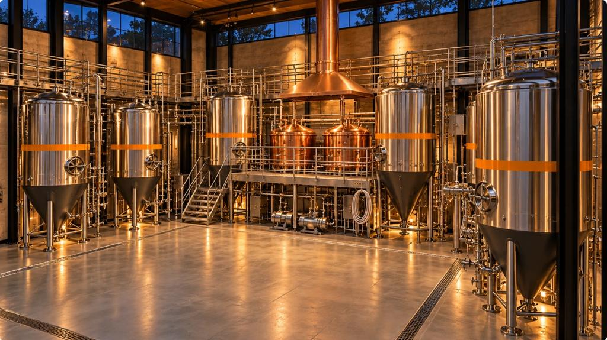

Space
A walk through the hall.
From the road to the patio, in seven steps.
Concept visualization. Final architecture is subject to professional design and site conditions. These are not construction plans. No site has been chosen and NASHA has no address. NASHA is in development. There is no brewery, no restaurant, no truck and no menu for sale yet. Images are concept visualizations and illustrations, not photographs of NASHA.
01 Desire to visit
Exterior
A limestone-and-glass hall with timber arcade and perforated screens, set among native grasses and oaks.

02 Curiosity
Entrance
The first view is the point: warm light, a door, and tanks you can see from outside.

03 Refreshment
Bar
Taps, a tiled front and a back bar of glassware, with a sightline to the brewery.
04 Wonder
Brewery
Equipment behind glass. Everything here is illustrative: tank size, count and layout are an open decision.

05 Hunger
Kitchen
An open kitchen with fire at its centre: a tandoor and a comal.
06 Belonging
Dining
Long communal tables and plates for the middle.
07 Staying
Patio
A covered court with shade and fans for Texas heat, greenery, and light for the evening.

How the zones relate.
A concept diagram, not a floor plan.
What each space has to do.
Requirements for a future architect, not a design. Every picture of the hall is conceptual and illustrative.
| Space | Intent | Family and accessibility intent | Not claimed |
|---|---|---|---|
| Exterior | A warm, shaded, readable arrival that signals craft hospitality, not theme | Clear step-free approach intended | No site, no address, no approved sign |
| Entrance | A clear threshold with a welcome point and a view of the room and brewery glass | Door and threshold designed for step-free passage as an intent | No accessibility compliance claim |
| Bar | A social hub for beer and NA on equal footing, with the brewery visible | Part of the bar usable seated at an accessible height as an intent | No tap count, no equipment |
| Dining | Long communal tables and smaller tables, easy conversation | Space for strollers and wheelchairs intended; family areas legible | No seat count, no square footage |
| Brewery Visibility | Guests can see real brewing work through glass; the work is shown, not performed | Safety separation for children | No tank count, no vessel size, no capacity |
| Kitchen Relationship | Food and beer are designed together; the kitchen pass and bar are close | Allergen information reachable at the pass | No equipment specification, no code claim |
| Patio | Shaded, shared, relaxed outdoor dining | Step-free patio access intended; family-friendly layout | No patio size or permit claim |
| Restrooms | Clean, accessible, easy to find | Accessible restroom intent; family needs considered | No ADA or code compliance claim |
| Service Paths | Staff routes that avoid guest collisions | Clear aisles intended | No dimensions |
| Receiving | A back door route that does not cross guests | n/a | No site claim |
| Storage | Dry, cold and freezer storage placed to shorten kitchen trips | n/a | No capacity |
| Staff Area | Space for breaks, lockers, handwash, and training | Accessible to staff with disabilities intent | No code claim |
| Mechanical Needs | A list of what professionals must size: hood, make-up air, cooling, drainage, power, gas | n/a | No MEP design |
| Brewery Support | Grain, chemicals, cold room, kegs, cleaning, drainage | Guest separation for safety | No equipment, no drainage design |
| Family Considerations | Families welcome where law and policy allow; separate from adult-focused bar seating | Changing and stroller space intended | No policy claim |
| Accessibility Intent | Step-free, clear routes, readable menus and signage | Design intent only | No compliance claim |
| Night Experience | Warm, glare-free, conversational, safe departure options visible | Safe-ride information intended | No claim about hours or licence |
| Day Experience | Daylight, shade, quieter service | Easy for families | No opening hours |